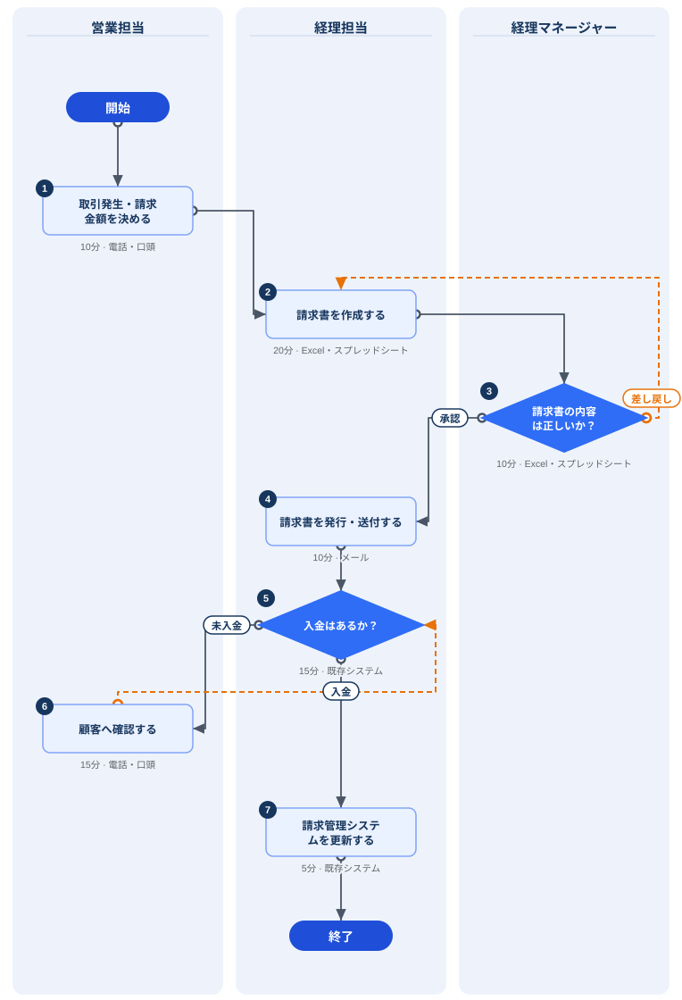
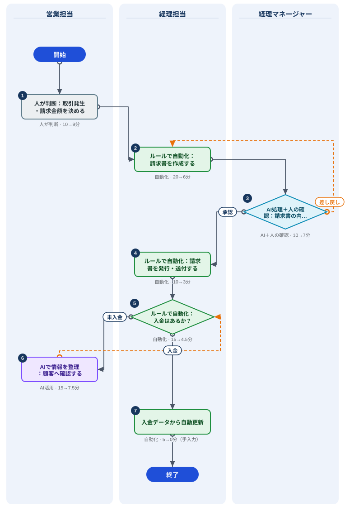

1. このツールでできること
（新機能）時間記録で、どの業務に時間を使っているかを実測してから分解することもできます。
自分の業務を「誰が・どの順に・どこで判断し・どこで戻るか」に分解して、担当者別の業務フロー図にします。そのうえで、工程ごとに AI活用・自動化・人の判断 などの改善候補を整理し、改善後の姿（To-Be）と時間短縮の目安を試算します。

流れは次の5ステップです。
- 業務を作る（業務名・件数など）
- 工程を1行ずつ入力する → 図が自動でできる
- 承認・確認などの分かれ道（判断）と差し戻しを設定する
- 工程ごとに情報の種類やリスクを選び、改善方式を判定する
- 改善後の図・効果試算を確認し、ファイルに保存する
2. はじめる前に（必ずお読みください）
- パソコンのブラウザ（Chrome・Edge など）での利用をおすすめします。スマートフォンでも表示できますが、工程表の入力は横スクロールになります。
- 同じパソコン・同じブラウザなら、閉じても次回そのまま続きから使えます。
- 別のパソコンで続ける・講師に提出する場合は、ファイルに保存（JSON）でファイルにしてください（8. 保存・提出）。
業務の流れを整理するのが目的なので、「顧客A」「取引先」のように一般化した表現で十分です。
3. 業務を作る
- アプリを開き、画面上部の＋ 新しい業務を押します。
初めて開いたときはサンプル（請求書業務）が表示されています。見本として残しておいて構いません。 - 次の項目を入力します。
業務名 * 例：請求書発行、問い合わせ対応。1つの業務＝始まりから終わりまでの一連の仕事にします。 担当部署 例：経理、営業事務 作成者（任意） 講師に提出する場合は氏名を入れてください。ファイル名にも使われます。 月間処理件数 この業務を1か月に何件処理するか（概算）。月間・年間の削減時間の試算に使います。 現在の困りごと 例：確認に時間がかかる、担当者によってやり方が違う - 入力は自動で保存されます。「保存」ボタンはありません。
上部のプルダウンで、作った業務を切り替えられます。複製は似た業務を作るとき、削除は不要な業務を消すとき（元に戻せません）に使います。
4. 工程を入力する（「① 流れ」タブ）
画面中ほどの「工程」の表に、1行に1工程を上から順番に入力します。入力するたびに、上のフロー図が自動で描き直されます。
| 担当者 | その作業をする人・役割（例：営業担当、経理マネージャー）。担当者ごとに図の縦の列（レーン）が分かれます。一度入れた名前は候補として出てきます。表記を揃えてください（「経理」と「経理担当」は別の列になります）。 |
|---|---|
| 作業内容 * | 「〜を〜する」の形で短く（15文字程度）。例：請求書を作成する。空の行は図に出ません。 |
| 種別 | ふつうの作業は作業。結果によって次が変わる工程は判断（次の章）。 |
| 次の工程 | 空のままなら次の行につながります。最後の行は自動で「終了」につながります。別の工程へ飛ぶ・戻るときだけ選びます。 |
| 分/件 | 1件あたり何分かかるか（概算でOK） |
| ツール | メール、Excel、紙、既存システム など |
| 備考・例外 | 補足や例外のメモ。図の上でマウスを重ねると表示されます。 |
行の右端のボタン：↑↓で順番を入れ替え、＋でその下に行を追加、削除で行を削除します。表の下の＋ 工程を追加で最後に追加できます。
5. 判断（分かれ道）と差し戻しを設定する
「承認する／差し戻す」「入金あり／なし」のように、結果によって次の工程が変わるところは「判断」にします。図ではひし形になります。
- その行の種別を判断にします。作業内容は問いかけ形にすると読みやすくなります（例：内容は正しいか？）。
- 分岐1：行き先の工程と条件を入れます（例：工程4へ／条件「承認」）。
- 分岐2：もう一方の行き先と条件を入れます（例：工程2へ／条件「差し戻し」）。
- 行き先に前の工程を選ぶと、図ではオレンジの点線（差し戻し）で表示されます。
- 行き先に終了を選ぶと、そこで業務が終わります。
- 分岐は2つまでです。3つ以上に分かれる場合は、判断を2つ続けて表してください（例：「金額は10万円以上か？」→「新規取引先か？」）。
- 作業の行でも「次の工程」を選べば、別の工程に戻したり合流させたりできます（例：「顧客へ確認する」→「入金はあるか？」に戻る）。
入力チェックの表示
フロー図のすぐ下に、入力の問題点が表示されます。
| 表示 | 意味と直し方 |
|---|---|
| エラー：判断工程には分岐を2つ設定してください | 判断の行で、分岐1・分岐2の行き先を両方選んでください。 |
| エラー：分岐の条件を入力してください | 条件1・条件2（例：承認／差し戻し）を入れてください。 |
| エラー：行き先が見つかりません | 行き先の工程を削除したときに出ます。行き先を選び直してください。 |
| 注意：つながっていない工程があります | どこからも矢印が来ない工程があります。前の工程の「次の工程」を見直してください。 |
| 注意：終了につながらない流れがあります | 戻り続けて終わらない流れがあります。どこかの分岐を「終了」または先の工程へつないでください。 |
6. 改善分析（「② 改善分析」タブ）
工程表の右上で② 改善分析に切り替え、工程ごとに次の3つを選ぶと、改善方式が自動で判定されます。
| 情報の種類 | その工程で主に扱う情報：定型データ／文章・メール／画像・PDF／音声／複合情報 |
|---|---|
| ルールの明確さ | やり方が決まっているか：明確／一部例外あり／曖昧・都度判断 |
| 判断リスク | 間違えたときの影響：低／中／高 |
| 改善希望 | あなたの希望：AIに任せたい／ルールで自動化したい／人の判断を残したい／未定 |
判定結果は「改善方式」の欄に自動：〇〇と表示され、横に判定理由が出ます。実態に合わないときは、プルダウンから手動：〇〇を選んで変更できます。
さらに、改善後の姿を具体的に書きたいときは次の2つを入れます（空欄なら自動）。
- 改善後の工程名：例「入金データから自動更新」。空欄なら「ルールで自動化：〜」のような定型文になります。
- 改善後 分/件：改善後の見込み時間。空欄なら方式ごとの仮定の短縮率で計算します（13章）。
7. 図と結果を確認する
フロー図
図の右上で現状（As-Is）と改善後（To-Be）を切り替えます。To-Be では工程が改善方式ごとに色分けされ、改善前→改善後の時間が表示されます。

PNG保存で画像として、SVG保存で拡大しても粗くならない図として保存できます。資料に貼るときに使ってください。
改善候補の集計・効果試算・To-Be提案
- 改善候補の集計：改善方式ごとの工程数
- 改善効果の試算：1件あたりの現状時間・改善後時間・短縮時間と、月間処理件数から計算した月間・年間の削減時間
- 改善後（To-Be）の提案：工程ごとの改善内容・判定理由・時間の変化
8. 保存・提出・別の端末で続ける
- ファイルに保存（JSON）を押すと、表示中の業務が
業務名_作成者.jsonとしてダウンロードされます。 - 別のパソコンで続けるときは、そのパソコンでアプリを開き、ファイルを開くからこのファイルを選びます。
- 講師に提出するときは、作成者に氏名を入れてから保存し、指定の方法（メール添付・共有フォルダなど）でJSONファイルを送ってください。
9. 時間記録と集計（どの業務から改善するか決める）
画面上部の時間記録で、自分の作業をカレンダーに記録できます。1〜2週間記録して集計を見ると、どの業務に時間を使っているかが分かり、改善する業務を実測で選べます。
記録する
- 時間記録を開きます（パソコンは週表示、スマートフォンは日表示）。
- 作業した時間帯をドラッグします（15分単位）。スマートフォンでは右側（下側）の＋ 記録を追加を使います。
- 作業内容とジャンルを選んで保存。処理した件数が分かるときは処理件数も入れてください（例：請求書3件）。1件あたりの時間の計算に使います。
- 記録はドラッグで移動、下端をドラッグで長さ変更、クリックで編集・削除できます。
- 週表示の日付の下の「1.5h / 8h」は、その日の記録済み時間の目安です（1日の勤務時間はジャンル設定で変更）。
- 個人名・顧客名・会議の相手先は書かず、「顧客対応」「社内会議」のように書いてください。
入力を楽にする
| よく使う作業 | 記録の入力画面で「よく使う作業に登録」にチェックすると、右側にボタンが並びます。押すと対象の日の最後の記録の直後に追加されます（時刻はあとから変更可）。 |
|---|---|
| 直前と同じ | 入力画面の上のボタンで、直前の記録と同じ作業内容・ジャンルを入れられます。 |
| コピー | 「前日の記録をコピー」「前週の同じ曜日をコピー」で、対象の日に一括で写せます。 |
| 作業内容の候補 | 過去に入れた作業内容が候補に出ます。同じ作業内容を選ぶと前回のジャンルが自動で選ばれます。 |
集計を見る
- 集計で日・週・月・期間指定を切り替え、◀ ▶で前後に移動します。
- 棒グラフはジャンル別の時間の積み上げです（月表示は週ごと）。PNG保存で画像にできます。
- ジャンル別の表には、合計・割合・記録回数・処理件数・分/件・1日平均（記録した日のみで計算）が出ます。ジャンル名を押すと作業内容別の内訳が開きます。
- 集計CSV・記録一覧CSVでExcel用のファイルを保存できます。
業務フローにつなげる
- 集計で時間の多い上位3ジャンルに業務フローで分解するボタンが出ます。押すと、そのジャンル名の業務が作られ（ひも付け済みならその業務が開き）、業務フロー画面に移ります。
- 業務フロー画面の業務欄に実測値（期間・合計時間・分/件・月換算の件数）が表示されます。月間処理件数に反映で、効果試算の件数を実測にできます。
- 工程の所要時間の合計と実測の分/件が大きく違うときは注意が出ます。工程の抜けや見積もりを見直してください。
月換算の件数 ＝ 処理件数 ÷ 記録した日数 × 月の稼働日数（初期値20日、ジャンル設定で変更）。既存の業務とひも付けるときは、ジャンル設定の「業務フローの業務」で選びます。
ジャンル設定
- 初期ジャンル：定型処理／資料作成／メール・チャット対応／電話・来客対応／会議／確認・承認／調べもの／移動／その他。名前・色・並び順は自由に変えられ、追加もできます。
- 記録で使っているジャンルは削除できません。使わなくなったら「表示」のチェックを外してください（過去の記録と集計は残ります）。
- 時間記録の一式は時間記録をファイルに保存（JSON）で保存し、別の端末でファイルから読み込むで移せます（読み込むと、その端末の時間記録は置き換わります）。
10. 図の見方
| 表示 | 意味 |
|---|---|
| 縦の列（レーン） | 担当者。左から、工程に登場した順に並びます。 |
| 開始・終了 | 自動で表示されます（入力は不要）。 |
| 作業 | ふつうの工程。左上の丸数字は工程番号、下の小さな文字は所要時間とツールです。 |
| 判断 | 結果によって次が変わる工程。出ていく矢印の上に条件（承認／差し戻し など）が表示されます。 |
| 実線の矢印 | 通常の流れ。別の列へ向かう矢印は、担当者間の受け渡しです。 |
| オレンジの点線 | 差し戻し・やり直し（前の工程へ戻る流れ）。 |
長い作業内容は図形の中で省略されます。図形にマウスを重ねると全文と備考が表示されます。
11. 上手に書くコツ
◯ よい例
- 請求書を作成する
- 内容は正しいか？（判断）
- 担当者名は役割で統一（経理担当）
✕ 避けたい例
- 請求書作成とチェックと送付（1行に複数の作業）
- 確認（何を確認するのか不明）
- 山田さん（個人名）
- 粒度をそろえる：1工程＝ひとりが続けて行う一まとまりの作業。担当者が替わるところで行を分けます。
- 規模の目安：担当者は6名以内、工程は20個以内。それを超える場合は業務を分けると見やすくなります。
- まず現状をそのまま：As-Is は「あるべき姿」ではなく「今やっている通り」に書くと、改善点が見つけやすくなります。
12. 講師の方へ（受講者の入力をまとめて見る）
- （時間記録を使う場合）受講者に1〜2週間記録してもらい、集計の上位ジャンルから分解する業務を選んでもらいます。時間記録そのものは提出させず、業務フローのJSONだけを提出してもらうのがおすすめです。
- 受講者に、作成者（氏名）を入れてからファイルに保存（JSON）し、提出するよう案内します。
- 集まったJSONファイルを講師のパソコンに置き、アプリのファイルを開くでまとめて選択（Ctrl／Shift＋クリック）します。
- 画面下部の「この端末に保存されている業務」に、業務名・作成者・工程数・短縮見込みの一覧が表示されます。開くで各受講者のフロー図と分析を確認できます。
- 読み込んだ内容は講師のブラウザに保存されます。共用パソコンでは講座終了後に削除してください（各業務を開いて削除）。
- 受講者のファイルは、提出先・保管期間など組織の情報管理ルールに沿って扱ってください。
- このアプリには受講者が講師へ自動送信する機能はありません。提出はファイルの受け渡しで行います。
13. 判定ルールと試算の前提
改善方式の判定（上から順に当てはまったもの）
| 条件 | 判定 |
|---|---|
| 情報の種類・ルールの明確さ・判断リスクのどれかが未設定 | 追加確認が必要 |
| 判断リスクが「高」 | 人の判断を中心 |
| 改善希望が「AIに任せたい」かつ 情報が文章・画像・音声・複合 | AI＋人の確認 |
| ルールが「明確」かつ（情報が定型データ または 希望が「ルールで自動化したい」） | 通常の自動化候補 |
| 情報が文章・画像・音声・複合 | AI活用候補 |
| ルールが「一部例外あり」 | AI＋人の確認 |
| 上記以外 | 通常の自動化候補 |
時間短縮の仮定（改善後 分/件 が空欄のとき）
| 改善方式 | 仮定の短縮率 | 改善のイメージ |
|---|---|---|
| 通常の自動化候補 | 70% | 入力規則・テンプレート・転記・通知などをルール化 |
| AI活用候補 | 50% | AIで要約・分類・情報抽出し、人が確認 |
| AI＋人の確認 | 30% | AIが下書き・分類し、担当者が確認・承認 |
| 人の判断を中心 | 10% | 判断は人に残し、AIは情報整理に限定 |
| 追加確認が必要 | 0% | 例外条件・判断基準を整理してから決める |
計算式：月間削減時間 ＝（現状の分/件 − 改善後の分/件）× 月間処理件数 ÷ 60、年間 ＝ 月間 × 12
14. よくある質問
入力した内容が消えてしまいました
別のブラウザ・別のパソコン・シークレットウィンドウで開いていないか確認してください。保存はブラウザごとです。ブラウザのサイトデータを削除した場合は元に戻せないため、JSONファイルに保存したものをファイルを開くで読み込んでください。
担当者の列が意図せず増えました
担当者名の表記ゆれ（「経理」「経理担当」、全角・半角スペースなど）があると別の列になります。表記をそろえてください。
矢印が分かりにくい・重なって見えます
工程の順番（行の並び）を、実際の流れに近い順に入れ替えると見やすくなります。差し戻しが多い場合は、判断を分けたり業務を分割したりするのも有効です。
図形の中の文字が途中で切れます
図形には2行まで表示します。全文は図形にマウスを重ねると見られます。作業内容は15文字程度を目安に短くまとめてください。
入力した内容は講師や運営に見えますか？
見えません。内容はお使いのブラウザの中だけに保存されます。講師が見られるのは、あなたがJSONファイルを提出した場合だけです。
スマートフォンで使えますか？
表示はできますが、工程表は横にスクロールして入力することになります。入力はパソコンでの利用をおすすめします。